Eclipse 的 Java Web 项目环境搭建
Eclipse 项目结构
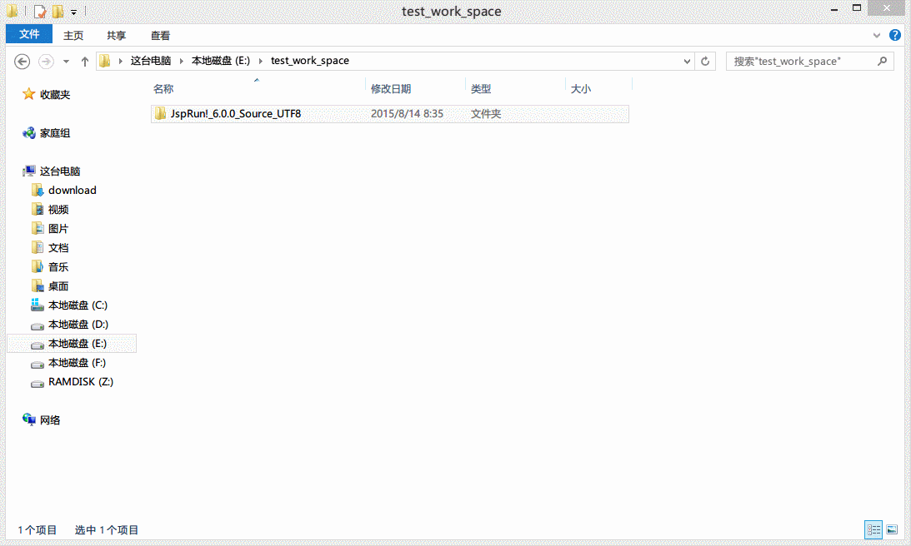
- 如上图 Gif 演示，在 Eclipse 下，一般中小项目的项目结构基本都是这种模式的，所以我们这里也网络上一个开源项目 JspRun 进行讲解。
- 下载地址：http://pan.baidu.com/s/1i3zrSf7
Eclipse 项目配置
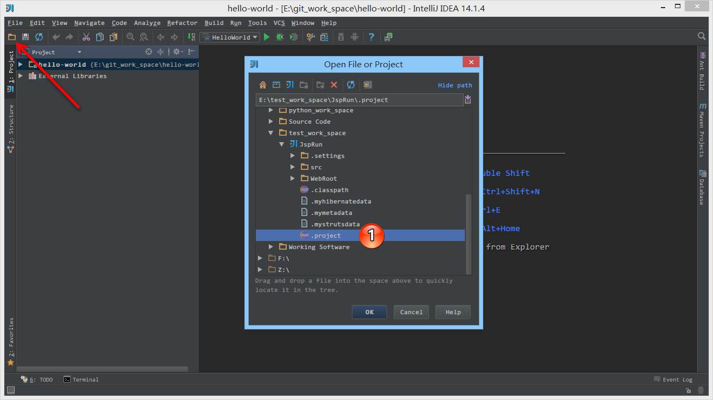
- 如上图箭头所示，在 IntelliJ IDEA 下是支持直接打开 Eclipse 项目的，无需导入。
- 如上图标注 1 所示，选择项目的
.project文件打开即可。
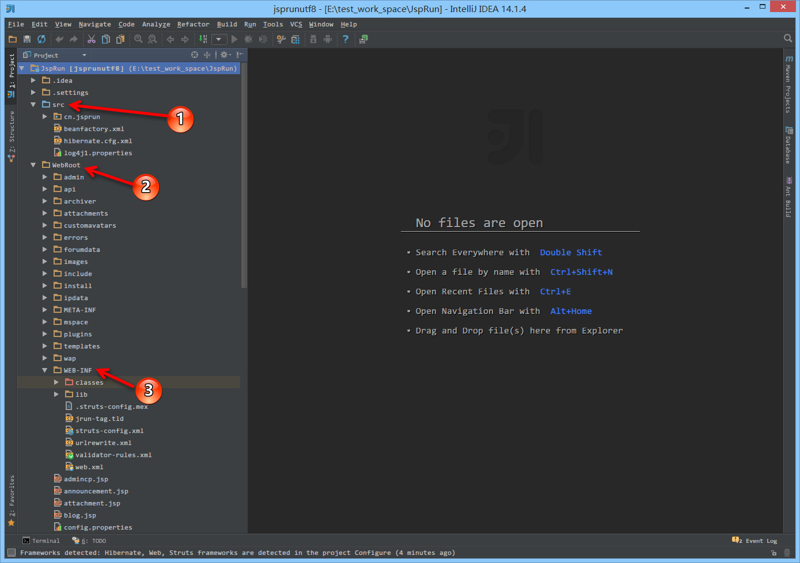
- 如上图标注 1 所示，IntelliJ IDEA 能自动识别到可编译的
src类目录，所以这里文件夹是蓝色的。- 如上图标注 2 所示，Java Web 项目
WebRoot是整个项目输出的根目录，所以这个区域也是非常重要的，只是无需配置。- 如上图标注 3 所示，
WEB-INF下的一些配置文件，以及两个目录classes和lib都是至关重要的，其中classes是红色目录，也就是被排除的，因为编译的文件对开发来讲是没有多大意义的，所以进行了排除。但是这并不会影响容器去使用它。
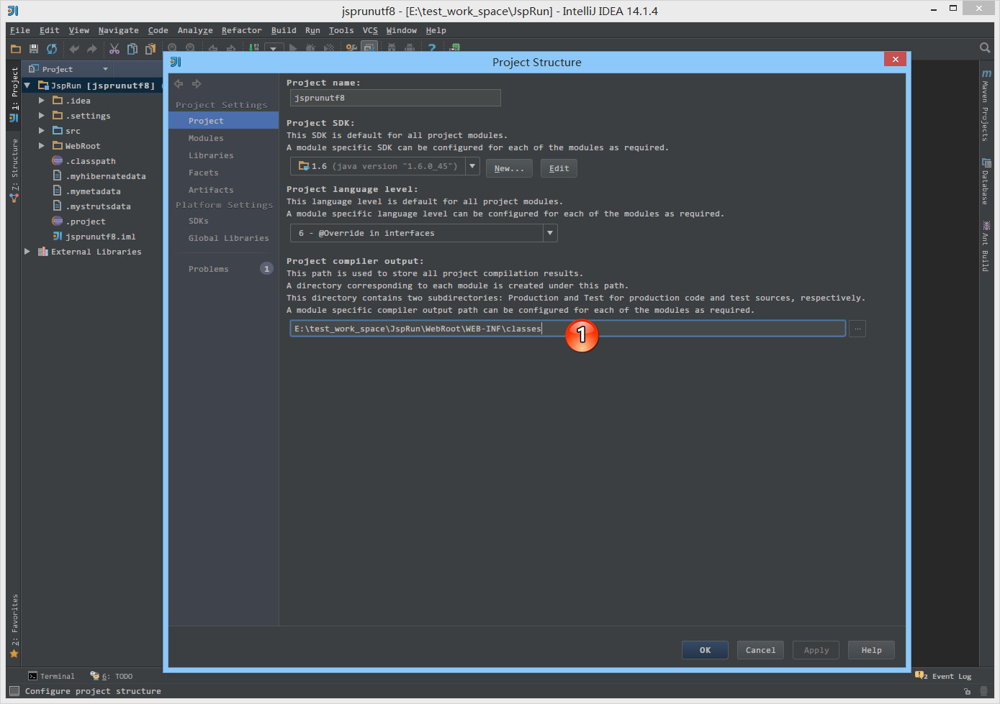
- 如上图标注 1 所示，因为这个项目是单 Module 的，所以我们这里在
Project compiler output可以选择项目WEB-INF下的classes编译目录。
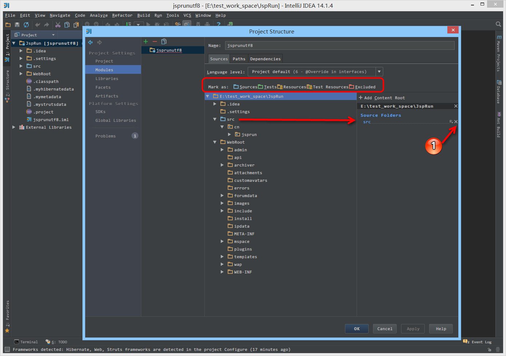
如上图红圈所示，我们可以根据对项目的任意目录进行这五种目录类型标注，这个知识点非常非常重要，必须会。
Sources一般用于标注类似src这种可编译目录。有时候我们不单单项目的src目录要可编译，还有其他一些特别的目录也许我们也要作为可编译的目录，就需要对该目录进行此标注。只有Sources这种可编译目录才可以新建 Java 类和包，这一点需要牢记。Tests一般用于标注可编译的单元测试目录。在规范的 maven 项目结构中，顶级目录是src，maven 的src我们是不会设置为Sources的，而是在其子目录main目录下的java目录，我们会设置为Sources。而单元测试的目录是src - test - java，这里的java目录我们就会设置为Tests，表示该目录是作为可编译的单元测试目录。一般这个和后面几个我们都是在 maven 项目下进行配置的，但是我这里还是会先说说。从这一点我们也可以看出 IntelliJ IDEA 对 maven 项目的支持是比较彻底的。Resources一般用于标注资源文件目录。在 maven 项目下，资源目录是单独划分出来的，其目录为：src - main -resources，这里的resources目录我们就会设置为Resources，表示该目录是作为资源目录。资源目录下的文件是会被编译到输出目录下的。Test Resources一般用于标注单元测试的资源文件目录。在 maven 项目下，单元测试的资源目录是单独划分出来的，其目录为：src - test -resources，这里的resources目录我们就会设置为Test Resources，表示该目录是作为单元测试的资源目录。资源目录下的文件是会被编译到输出目录下的。Excluded一般用于标注排除目录。被排除的目录不会被 IntelliJ IDEA 创建索引，相当于被 IntelliJ IDEA 废弃，该目录下的代码文件是不具备代码检查和智能提示等常规代码功能。- 通过上面的介绍，我们知道对于非 maven 项目我们只要会设置
src即可。如上图箭头所示，被标注的目录会在右侧有一个总的概括。其中
classes虽然是Excluded目录，但是它有特殊性，可以不显示在这里。- 如上图标注 1 所示，如果要去掉目录的标记含义，可以点击打叉按钮进行删除。
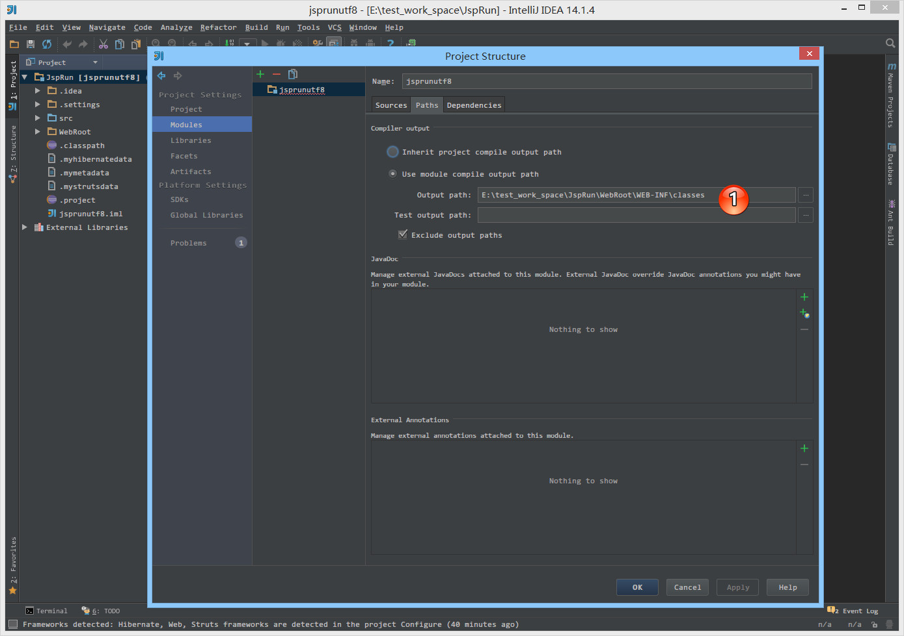
- 如上图标注 1 所示，这是一个单 Module 的项目，Module 的编译输出目录可以跟 Project 的项目输出目录一致，都是
WebRoot下的classes目录。
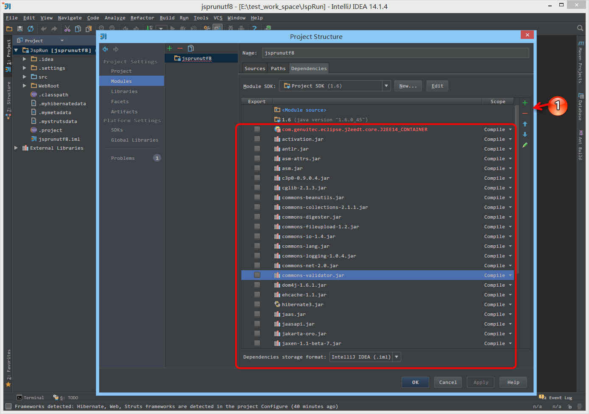
- 如上图红圈所示，这里显示项目的所有依赖包，其中红色表示 IntelliJ IDEA 无法识别。IntelliJ IDEA 支持一个一个导入依赖包，也支持直接导入一个目录下的所有依赖包。上图的这种就是一个一个具体化的依赖包。除非你的项目各个依赖包有存在依赖顺序关系，不然不建议一个一个引入，这样比较麻烦。所以我这里会先把这些零散的依赖包全部去除掉，然后按目录来引入。
- 如上图标注 1 所示，依赖包支持这五种操作。
- 加号，表示可以引入新依赖包。
- 减号，表示可以去除对应的依赖包。
- 向上箭头，表示依赖包可以向上移动位置。依赖包越上面的表示在项目加载的时候越是优先，所以对于同一个依赖包，不同版本，依赖顺序不同，结果可能也是很有会不同的。
- 向下箭头，表示依赖包可以向下移动位置，原因同上。
- 笔，表示可以编辑依赖包的名称和路径。
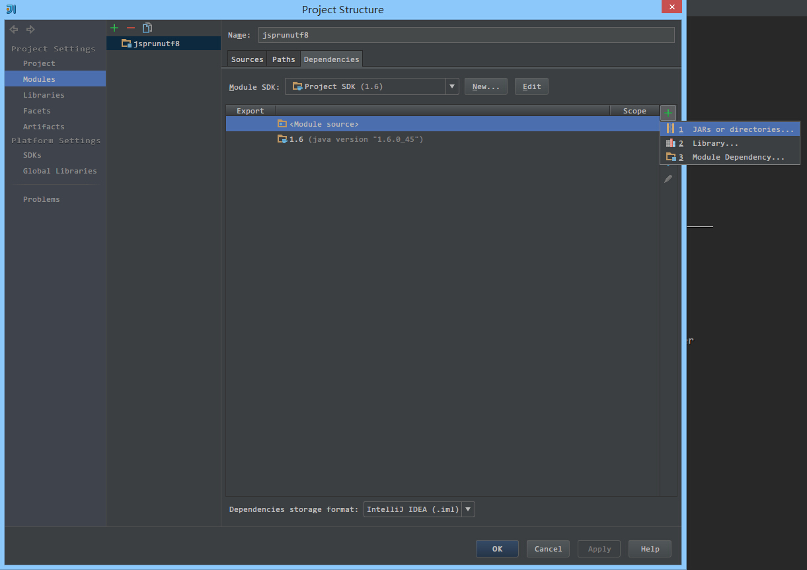
- 如上图所示，引入依赖包支持
jar包和目录。以及已经导入项目的Libraries中的依赖包。多 Module 的项目还可以依赖其他 Module。
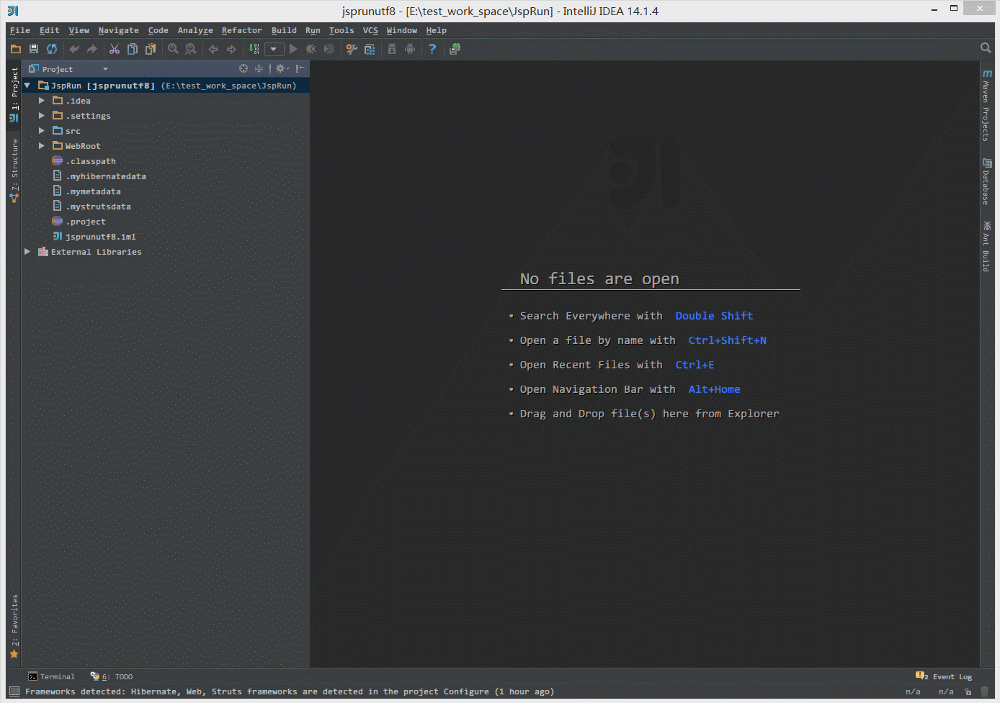
- 由于我们刚刚去掉了红圈中的所有依赖包，所以我们现在还需要导入依赖包。到导入之前我们先把项目的
lib作为一个总的依赖包进行放置到项目Libraries中。如上图 Gif 演示，就是把lib目录转换成一个依赖包。这样的好处是，当我们项目有新添加依赖包，我们只要放置在lib目录下即可自动被项目引入，原因就是因为我们这里引的是目录，而不是一个一个依赖包。
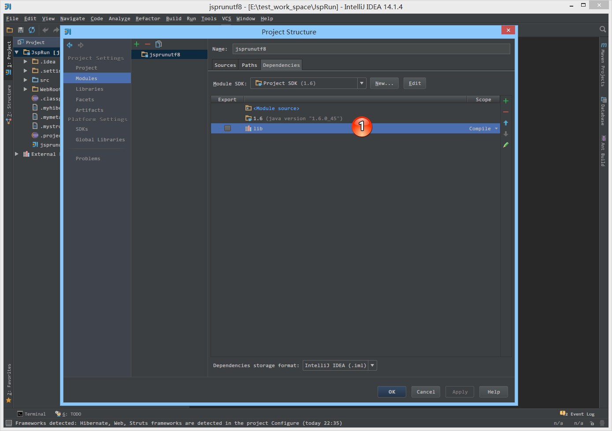
- 如上图标注 1 所示，引入刚刚放置好的
Libraries下lib依赖包。
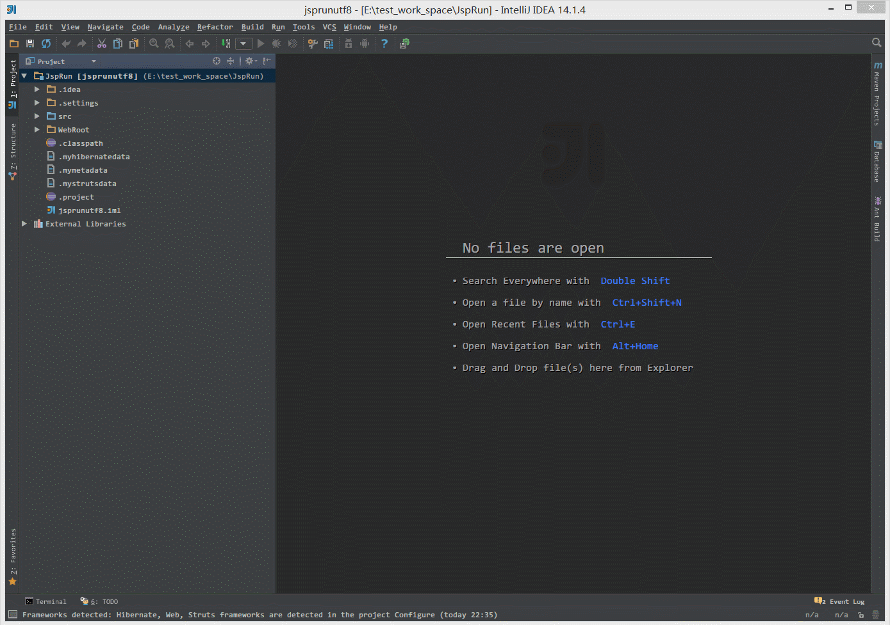
- 对于传统的 Java Web 项目，我们一般还需要指定配置 web.xml 位置。如上图 Gif 演示，这个一般在
Facts中进行配置。Facts可以理解为用于配置项目的框架区，在这里管理项目使用的框架配置文件。这个是 IntelliJ IDEA 特有的一个配置点。- 除了 web.xml 一般我们要配置外，其他一些框架，即使我们不在这里配置也是不会影响项目的运行的，但是是有缺点的。比如我们项目中一般都是有 Spring 框架的，而 Spring 是有很多配置文件的，如果我们在这里进行了配置，那你会发现 IntelliJ IDEA 编辑区底部会多出现几个跟 Spring 项目的设置区，原因就是你告诉了 IntelliJ IDEA，你的项目使用了 Spring 框架，那 IntelliJ IDEA 就会出现其对应的配置功能给你。Hibernate 等其他框架道理一样。
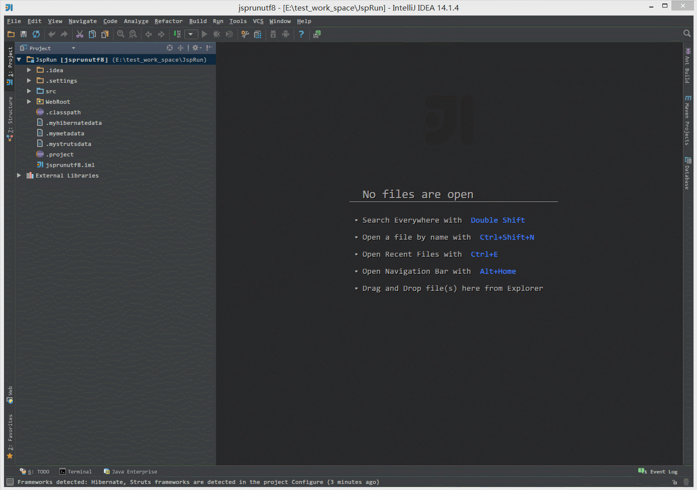
Artifacts也是 IntelliJ IDEA 特有的一个概念，我们可以理解这里是配置项目最终输出结果的地方。比如 Java Web 项目我们一般必备一个配置就是要配置成一个 war 包展开的方式，这样容器才能运行该项目。上图 Gif 演示的就是配置一个 war 包展开的输出结构。其结构是由于前面的几项配置决定，所以如果前面的 Module 配置没有多大问题，这里可以省去一些配置步骤。但是有些时候我们也是需要做一些修改，比如此项目的输出目录默认生成的是错误，我改为了项目中的webRoot目录。- 该
Artifacts配置，等下在配置 Tomcat 的时候也会引用到，所以这里需要重点注意下。
Tomcat 配置
- 如上图 Gif 所示，为项目整体的一个 Tomcat 配置过程，有些需要特别讲解的，我们将在下面进行分解。
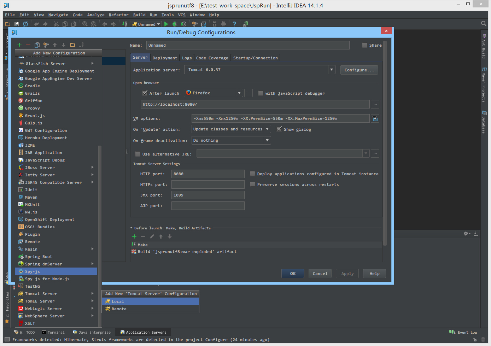
- 如上图弹出层所示，IntelliJ IDEA 支持目前市场上主流的应用容器，所以基本上一个 IntelliJ IDEA 足够我们开发常见的项目。但是这里有一点需要提醒的，IntelliJ IDEA 支持这些容器但是不等同于帮我们自带了这些容器的文件，所以上面的 Gif 演示中，原本我只有引入 Tomcat 7，但是为了这个项目我又引入了 Tomcat 6，而引入的 Tomcat 6 我只是指定了其存放的目录位置 IntelliJ IDEA 自动会识别到。
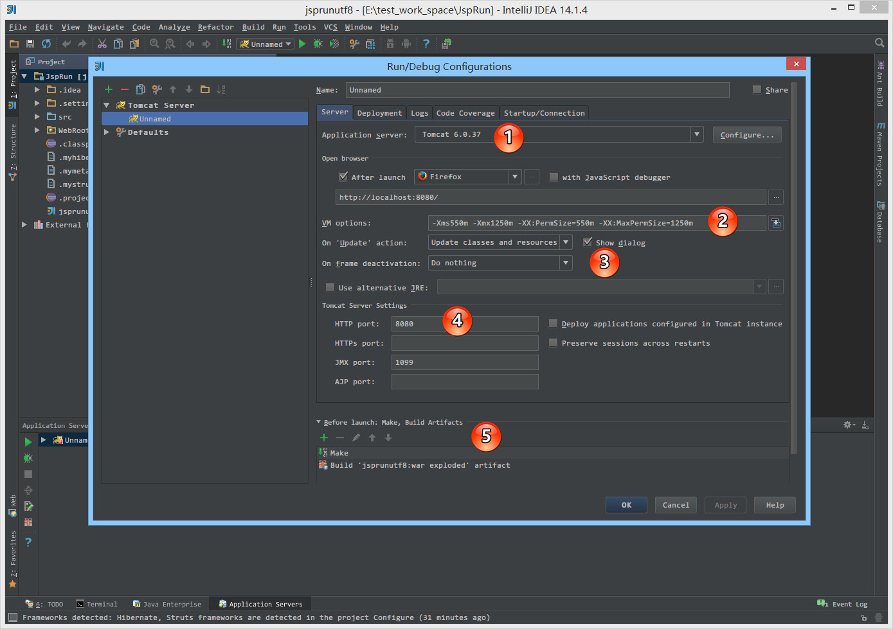
- 如上图标注 1 所示，我们可以随时为项目切换不同的容器。
- 如上图标注 2 所示，我们可以指定给运行的容器设置 VM 参数。
- 如上图标注 3 所示，这分别是在两种命令下的触发的事件。这个是 IntelliJ IDEA 特有的，也是重点。
On Update action当我们按Ctrl + F10进行容器更新的时候，可以根据我们配置的这个事件内容进行容器更新。其中我选择的Update classes and resources事件是最常用的，表示我们在按Ctrl + F10进行容器更新的时候，我们触发更新编译的类和资源文件到容器中。在 Debug 模式下，这个也就是所谓的HotSwap。这是这种热部署没有 JRebel 插件那样好用。On frame deactivation当我们切换 IntelliJ IDEA 到浏览器的时候进行指定事件更新，这个一般是因为 Web 开发的时候，我们需要经常在 IntelliJ IDEA 和各个浏览器之间来回切换测试，所以才有了这种需求。IntelliJ IDEA 是为了帮我们在做这种无聊切换的时候做一些指定事情。当然了，如果切换过于频繁，这个功能还是很耗资源的，所以我设置的是Do nothing表示切换的时候什么都不做。- 如上图标注 4 所示，默认 Tomcat 的 HTTP 端口是 8080，如果你需要改其端口可以在这里设置。
- 如上图标注 5 所示，这个知识点在前面的文章已经有讲过了。这里表示在 Tomcat 容器运行前做什么事情，这里分别了：Make 和 Build Artifacts 操作。如上面 Gif 演示，这里的
Build Artifacts是我们在Deployment选项卡中添加了 Artifact 之后自动出现的。
Tomcat 启动
- 通过上面的配置，IntelliJ IDEA 环境配置算是配置好了，现在配置下该项目相关的。
- 打开你的 Mysql，执行下面脚本，创建一个新的数据库和用户：
CREATE DATABASE `jsprun` CHARACTER SET utf8;
CREATE USER 'jsprun'@'localhost' IDENTIFIED BY 'jsprun';
GRANT ALL PRIVILEGES ON jsprun.* TO 'jsprun'@'localhost';
FLUSH PRIVILEGES;
- 切换到上面新建的
jsprun数据库中执行项目中这个数据脚本，文件位置：JspRun\WebRoot\install\jsprun_zh_CN.sql。- 修改
JspRun\WebRoot\config.properties文件中的几个属性为下面内容：dbuser = jsprundbpw = jsprun
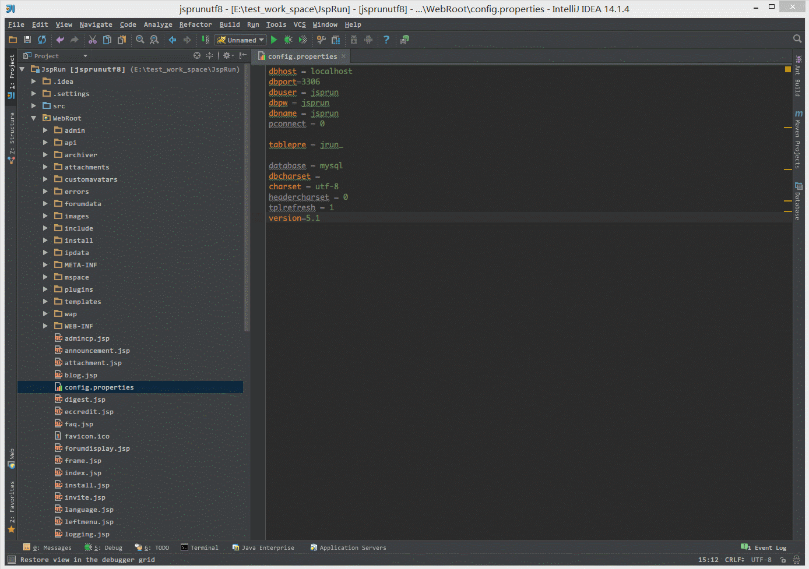
- 如上图 Gif 演示，我们缺少引入 Tomcat 的依赖包。
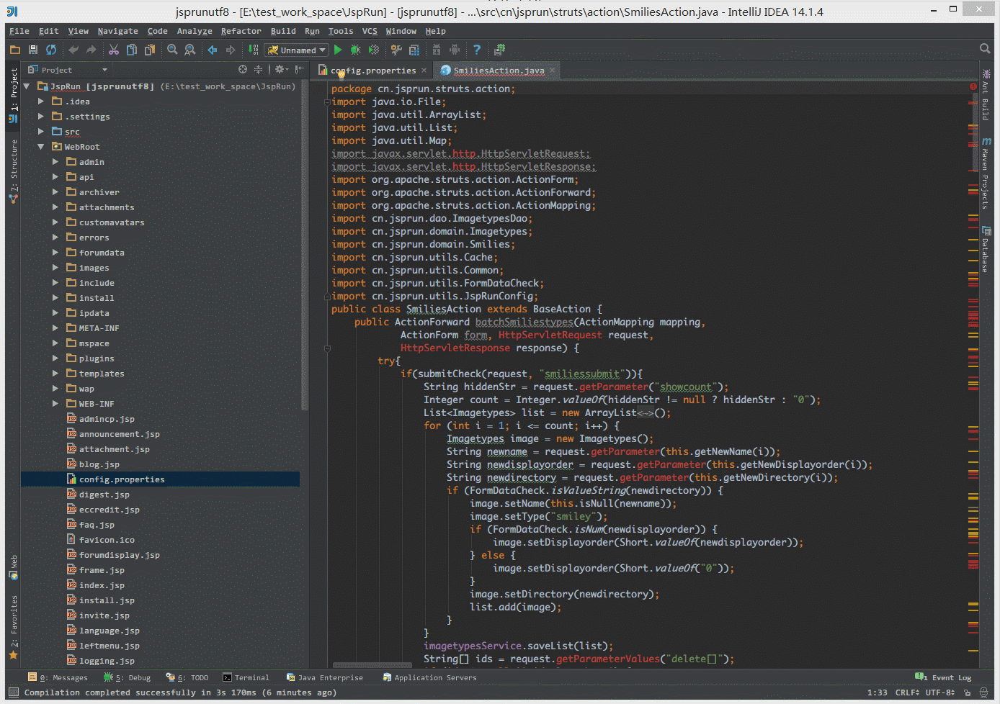
- 如上图 Gif 演示，我们引入 Tomcat 的依赖包之后，可以运行该项目。
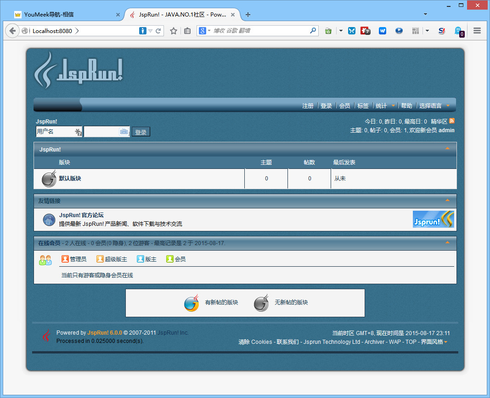
- 如上图所示，为最终项目运行效果图。
Tomcat 停止
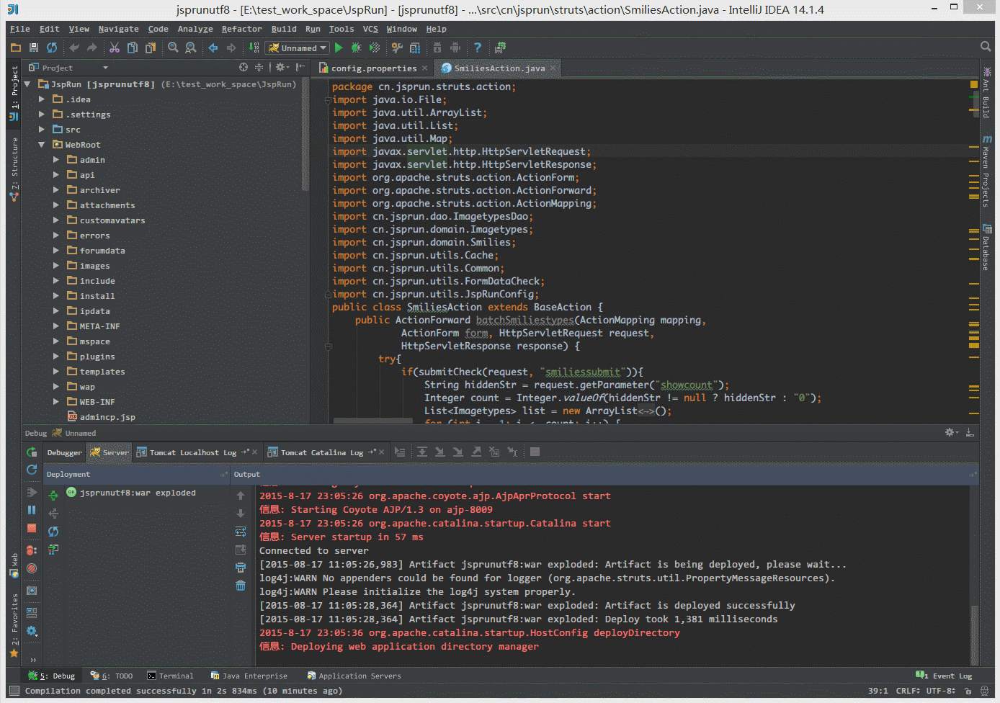
- 如上图所示，停止按钮是要按两次，第一按完出现一个骷髅头并不是停止，需要再点击一次。
- 有时候即使点了两次，Tomcat 容器也不一定能完全停掉，这时候很容易出现端口被占用的操作，这时候你需要打开系统的资源管理器，手动 kill 系统上所有的 java 进程。
输出 war 压缩包
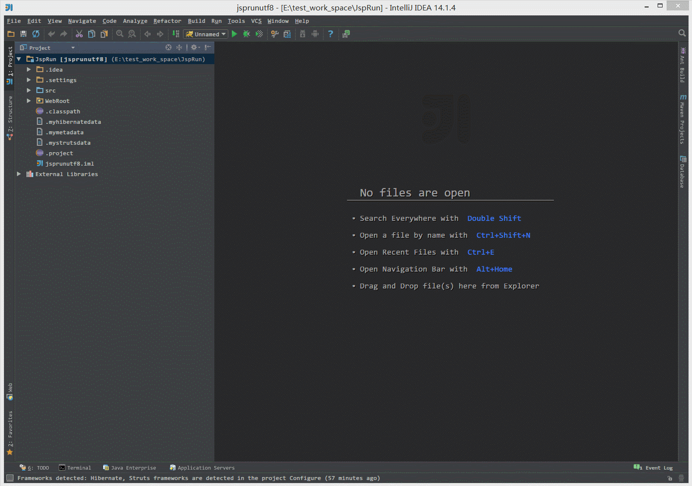
- 如上图 Gif 所示，除了在 Artifacts 中需要配置，还需要在容器中也跟着配置，这样在启动容器的时候才会输出一个 war 压缩包。
- 通过配置，我们也知道 war 的压缩包本质是根据展开的 war 输出包进行压缩的得来。